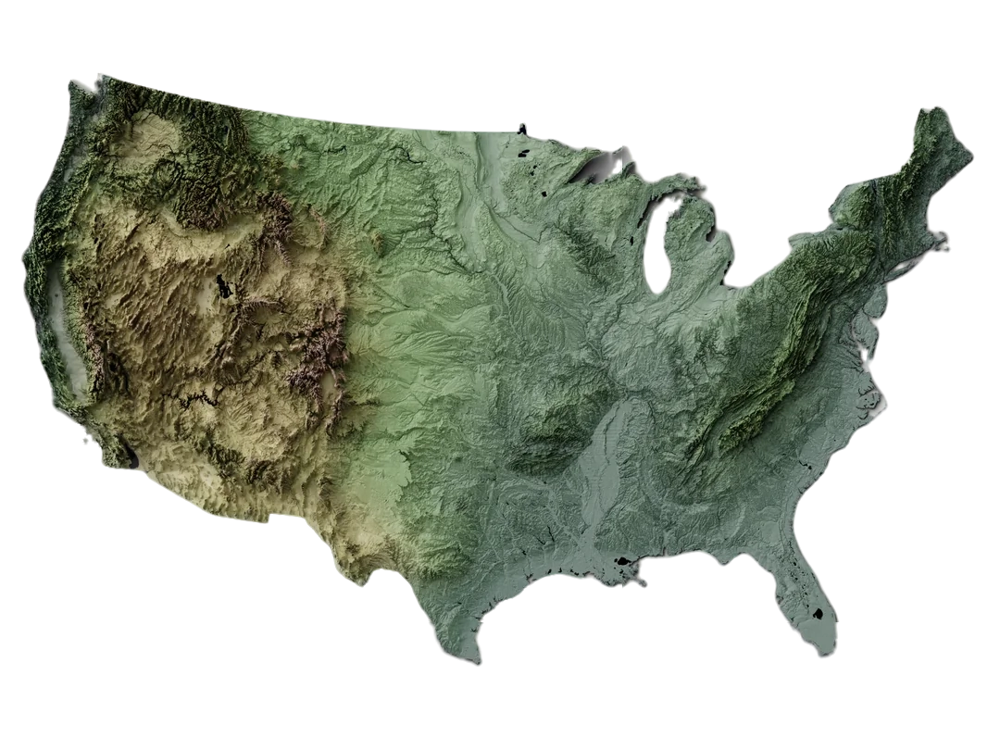

Climate change is the biggest threat ever experienced by mankind. It refers to the long-term
alteration of temperatures and weather patterns and its effects have become more visible as the
average temperature of the planet went up by 1.2 °C since the 1800s [1]. As the Earth warms,
it disrupts natural weather systems, contributing to more frequent and extreme weather events.
The increasing danger of these events is a serious threat to the safety of many populations.
Although addressing climate change requires significant economic and political shifts, we can
also focus on better understanding the changes already occurring. The goal of our project is to
identify trends and visualize extreme weather events that have taken place, while also assessing
their human and economic impacts.
To address our research question, we need relevant data. In this project we will focus on events
that have happen in the United States. This is because the United States experiences a high number
of extreme weather events due to its size and diverse geographical and climatic conditions. But also
because of the availability of high-quality data on extreme weather events.Indeed, thanks to
the National Oceanic and Atmospheric Administration (NOAA), we have access to the Storm Events
Database [2], which provides information on the occurrence of storms and other significant weather
phenomena having sufficient intensity to cause loss of life, injuries, significant property damage,
and/or disruption to commerce; Rare, unusual, weather phenomena that generate media attention,
such as snow flurries in South Florida or the San Diego coastal area; Other significant
meteorological events, such as record maximum or minimum temperatures or precipitation that
occur in connection with another event. This database spans from January 1950 to November 2024,
making it particularly valuable for analyzing the impact of climate change on the frequency of
extreme weather events.
We will focus on trying to answer questions such as "How does climate change contribute to
the increasing frequency of extreme weather events in the USA ?" or "What are the
economic and human consequences of the growing occurrence of extreme weather events ?".
Continue to scroll to start by exploring the current situation of climate change in the United
States !
Climate Change in the United States
Temperature Anomalies
To understand how the climate change is affecting the extreme weather events we first
need to understand what is the current climate situation in the United States. For that
we start by showing an historical histogram of the average temperature anomalies for the
whole country campared to the 1961-1990 mean average as this is considered, in the scientific
litterature, as a good baseline for assessing long term changes [3]. It is obvious
from this histogram that the situation is deteriorating and that all recent years are above the
average.
Some legitimate question that can come to mind when looking at the first histogram is
whether or not the situation is the same over all the country or if some regions, some states
are more spared by the effect of climate change. To asnwer that question we plot the temperature
anomalies averaged over 2024 but for the different states. It is clear that the climate change problem is affecting more intensly some
state. However, none is spared and everyone should be concerned by the problem.
Analysis of Historical Weather Events
We continue our exploration by looking at the historical data of extreme weather events. This is
essential to understand the situation in the United States. We start by presenting some plots with general
statistics that aim to give you a broad overview of which type of events can happen in the United States,
at which frequency, and with which impact. However, as our dataset is quite extensive, covering many years,
many type of events with details concerning economic loss and number of deaths, we are forced to be selective
on what we show. However, to give you the posisbility to explore more the data by yourself, you have the
possibility, to filter the data by state, range of years, type of events and then choose which information
you want to plot and on which type of plot.
Total number of events over the years
A first insight on our data is to look at the number of events through the years.
It is very clear that there is more and more events trhough the years, however, this
is due, at least in some way, to the fact that the Storm Events Database has been recensing
more type of events. In particular, only tornadoes were counted in the first phase from 1950
to 1955.
Proportional distribution of event types over time
This map displays storm event frequency by county, with taller spikes
representing areas experiencing higher numbers of severe weather events.
As we can see, such events are more frequent in the eastern part of the country.
Deadliest type of events
This histogram highlight the deadliest type of events over all the years.
Most costly type of events
Climate models project continued warming across the United States,
with some regions expected to see more dramatic changes than others.
Configure your filters and click "Update Plot" to display weather data visualization
Select States
▼
Weather Events
▼
Metric
▼
Year Range
▼
Plot Type
▼
Impact of Climate Change on Events Frequency
As you have maybe found out already above by exploring the data with different kind of plots,
the number of extreme weather events is increasing each year. This results in more crop damage,
deaths and .... This has a huge impact on society in general. To better anticipate future extreme
events and mitigate their impact, a better understanding of the factors facilitating the apparition of
weather events is essential. This is also necessary to assess what are the consequences of the climate
change on the extreme weather freqeuncy. In this part of our exploration we detail other knwon factors
influencing the number and the scale of weather events in the United States before actually trying to
answer scientifically to whether or not climate change has also an impact and in at what scale.

Topographic Map Placeholder
(Image not available)
The topography of the United States
One of the most influencing factor, if not the most, of the impressive number and impact of
extreme weather events in the United States is the topography of the country. As you can see
on the topographic map displayed here, the elevation and terrain features vary a lot depending on
the regions. Key features visible on this map include mountain peaks, valleys and ridges. How does
these variations impact the number of events ?
Many factors contribute to the climatology of a given location, including how close to the
equator you are, proximity to the ocean, and elevation. But when it comes to what causes
climate to vary over seemingly short distances, few things can compare to the influence of
topography []. We can not detail everything here and as this is some complex systems,
every factors infulencing extreme weather events is not fully understood by scientists. However,
this text was to remind you that some of the pattern you might have found exploring the data above
can be due to other factors such as topography.
As you have maybe found out already above by exploring the data with different kind of plots,
the number of extreme weather events is increasing each year. This results in more crop damage,
deaths and .... This has a huge impact on society in general. To better anticipate future extreme
events and mitigate their impact, a better understanding of the factors facilitating the apparition of
weather events is essential. This is also necessary to assess what are the consequences of the climate
change on the extreme weather freqeuncy. In this part of our exploration we detail other knwon factors
influencing the number and the scale of weather events in the United States before actually trying to
answer scientifically to whether or not climate change has also an impact and in at what scale.
"Scientific studies indicate that extreme weather events such as heat waves and large
storms are likely to become more frequent or more intense with human-induced climate
change"
EPA, 20.. []
"Warming increases the likelihood of extremely hot days and nights,
favors increased atmospheric moisture that may result in more frequent
heavy rainfall and snowfall, and leads to evaporation that can exacerbate
droughts"
National Academies of Sciences, 20..
[]
"It is an established fact that human-induced greenhouse gas
emissions have led to an increased frequency and/or intensity
of some weather and climate extremes since pre-industrial
time, in particular for temperature extremes"
IPCC, 20.. []
"Advancing scientific capability now makes it possible to make and defend
quantitative statements about the extent to which human-induced climate change
has influenced either the magnitude or the probability of specific types of
event or event classes"
Science, 2021
[]
Conclusion
As we have seen with these data and visualizations, it is clear that climate change has a role in
the increasing number of events even though it is not the only factors. However, climate change
has other consequences and since it is increasily costly both economicaly and in terms of deaths and
casulties, it is necessary to take quick and impactful actions to both mitigate its consequences as well
as reducing emissions to diminish the future anomalies.
Meet the team
Luc
Master in Data Science
Timo
Master in Life Sciences Engineering with a minor in Data Science
Corentin
Master in Computational Science and Engineering
References
[1] United Nations. (n.d.). What is climate change? United Nations.
https://www.un.org/en/climatechange/what-is-climate-change
[2] World Meteorological Organization. (2022, July 13). It’s warmer than average.
But what is average? https://wmo.int/media/news/its-warmer-average-what-average
[] U.S. Environmental Protection Agency. (2023, July 18). Weather and climate. Climate Change Indicators in the United States. https://www.epa.gov/climate-indicators/weather-climate
[3] National Academies of Sciences, Engineering, and Medicine. 2016. Attribution of Extreme Weather Events in the Context of Climate Change. Washington, DC: The National Academies Press. https://doi.org/10.17226/21852.
[] IPCC. (2021). Weather and climate extreme events in a changing climate (Chapter 11). In V. Masson-Delmotte, P. Zhai, A. Pirani, et al. (Eds.), Climate Change 2021: The Physical Science Basis. Contribution of Working Group I to the Sixth Assessment Report of the Intergovernmental Panel on Climate Change (pp. 1513–1766). Cambridge University Press. https://doi.org/10.1017/9781009157896.013
[] Peter Stott ,How climate change affects extreme weather events.Science352,1517-1518(2016).DOI:10.1126/science.aaf7271
[] shshshshhshsh